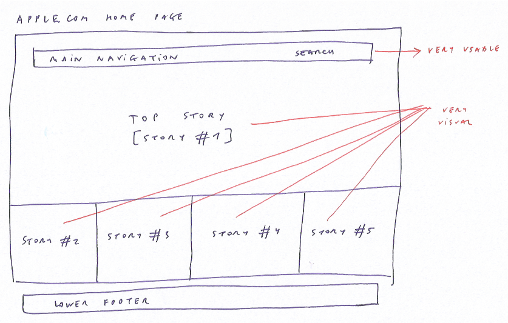
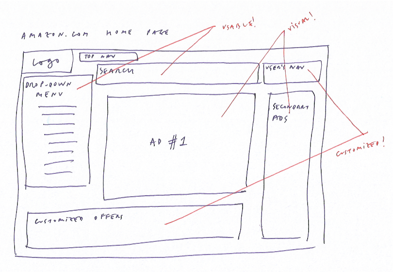
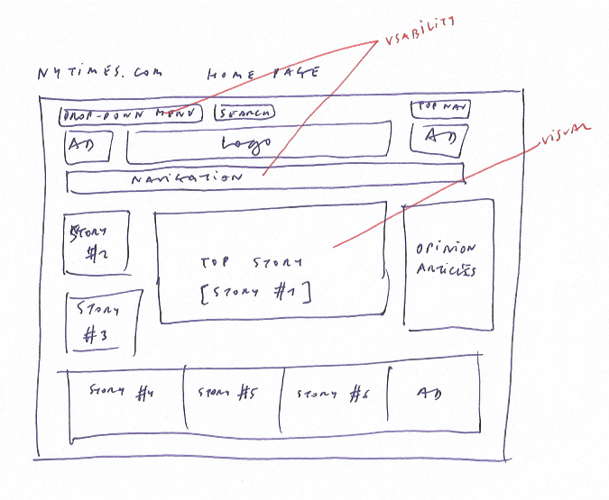

Analyzing the wireframe of 3 sites in terms of user experience and design.

apple.com
The wireframe of Apple's home page is simple and easy to use, with a very short navigation and just 5 highlighted visual stories/promotions. I think they have designed it with the mobile user in mind.
As I mentioned in my week 1 tech blog post, I miss the traditional even more simplistic and zen approach of Apple.

amazon.com
I'm a fan of Amazon's UX super-high standards. Maybe this is not the beautiest site on earth, but it is extremely user-friendly and totally focused on user customizadion.

nyt.com
NYT is probably the less creative project among the three selected, but it's still elegant and usable. It seems to me that the main goal of the developer is to have a look as similar as possible to the traditional newspaper.